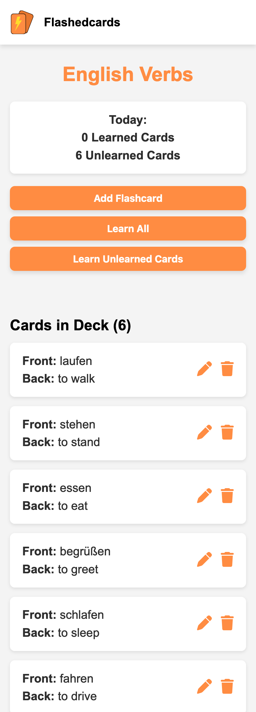
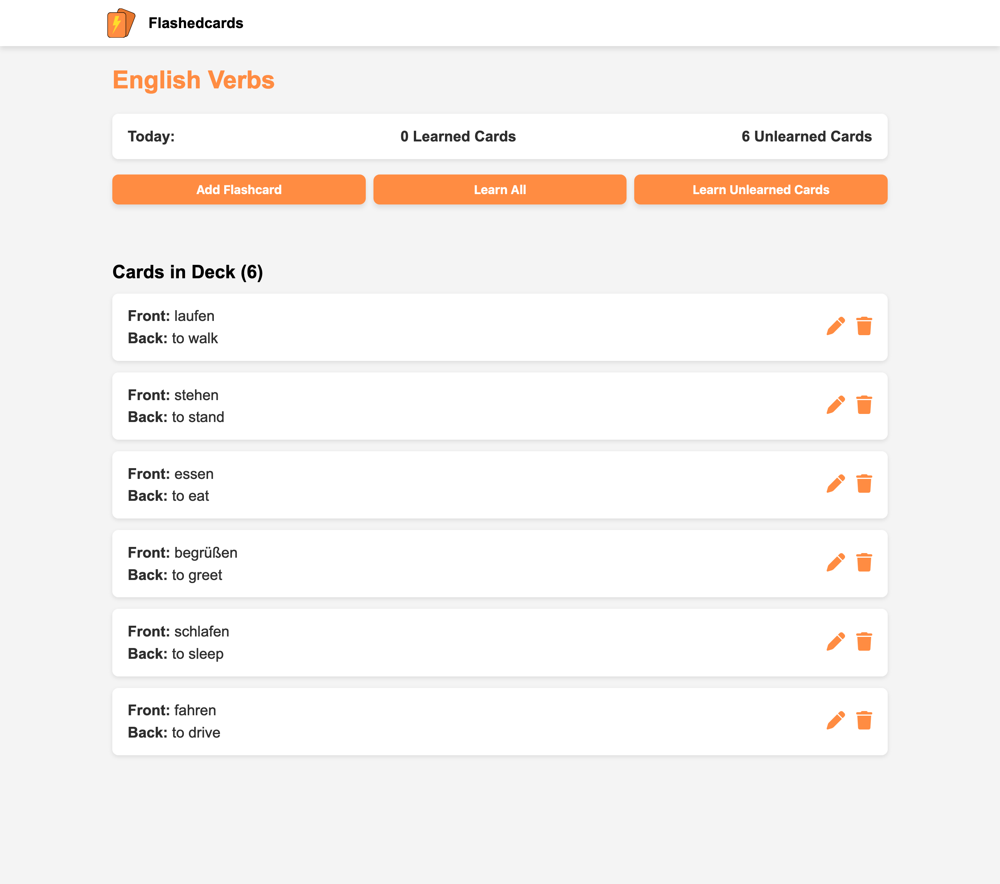

I have been studying Computer Science at Hochschule Ruhr West in Bottrop for the past 3 years. Outside of my studies, I spend every day coding websites and exploring new technologies to continuously improve my skills.
I thrive on solving problems and crafting websites that deliver a seamless and enjoyable experience for users. Let’s connect and create something great!


I'm always open to new opportunities and collaborations. Feel free to reach out and let's create something amazing together!
Contact Me